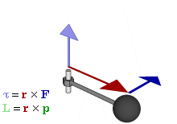

Meccanica del punto materiale
- Princìpi della dinamica.
- Forze.
- Momento angolare.
Antonio Pierro @antonio_pierro_
Per consigli, suggerimenti, eventuali errori o altro potete scrivere una email a antonio.pierro[at]gmail.com
Primo principio della dinamica
- Un corpo non soggetto a forze permane nel suo stato di quiete o di moto rettilineo uniforme.
- La proprietà dei corpi di mantenere il loro stato di quiete o di moto rettilineo uniforme è chiamata inerzia.
- Un sistema di riferimento inerziale è un sistema di riferimento in cui è valido il primo principio della dinamica.
Seconda legge della dinamica
- Si osserva che l'accelerazione impressa a un corpo di massa nota m è inversamente proporzionale alla sua massa e direttamente proporzionale all'intensità dell'azione a cui viene sottoposto: \[\begin{aligned} \vec a = \frac{\vec F}{m} \end{aligned} \]
- La legge di Newton contiene, come caso particolare, il primo principio della dinamica.
- Tale legge è verificata solo nei sistemi di riferimento inerziali (altrimenti compaiono altri termini correttivi, le forze apparenti).
Terza legge della dinamica
- Quando due corpi interagiscono,
la forza \(\vec{F}_{i->j}\), che il primo corpo (i) esercita sul secondo corpo (j)
è uguale e opposta alla
forza \(\vec{F}_{j->i}\) che il secoondo corpo (j) esercita sul primo corpo (i)
Quantità di moto
- Si definisce quantità di moto di un punto materiale che si muove con velocità \(\vec{v}\): \[\begin{aligned} \vec p = m * \vec v \end{aligned} \]
- Se la massa è costante: \[\begin{aligned} \vec F = \frac{d\vec p}{dt} \end{aligned} \]
Risultante delle forze
- Per convenzione, si indica con il simbolo \(\vec{R}\) la risultante (somma) delle forza applicate su un punto materiale.
- Affermare che la forza agente su un punto è nulla, spesso indica che la somma delle forze agenti su di esso, cioè la risultante, è nulla: \[\begin{aligned} \vec R = \sum_{i=1}^n \vec F_i = \vec F_1 + \vec F_2 + .... + \vec F_n = 0 \end{aligned} \]
Reazioni vincolari
- Se un corpo soggetto all’azione di una forza rimane fermo, dobbiamo dedurre la presenza di una forza uguale e contraria applicata al corpo in modo tale che esso rimanga in quiete.
- Questa forza sarà chiamata reazione vincolare e sarà indicata con il seguente simbolo \(\vec{N}\)
Forza peso
- In prossimità della superficie terrestre tutti i corpi assumono - se lasciati liberi - la stessa accelerazione (detta di gravità) diretta lungo la verticale e il cui modulo in media è: \[\begin{aligned} \vec g = 9,8 \frac{m}{s^2} \end{aligned} \]
- Dalla seconda legge di Newton risulta: \[\begin{aligned} \vec P = m * \vec g \end{aligned} \]
- In assenza di altre forze il moto del corpo sarà uniformemente accelerato.
Forza di attrito radente
- Supponiamo di applicare una forza orizzontale su un corpo poggiato su un piano: si osserva che il corpo non entra in movimento finché la forza non supera un valore pari a:
\( \vec F_{as} \leq \mu_s * N *\vec i \) (forza di attrito staticom) - Quando il corpo entra in movimento si osserva una forza costante che si oppone al moto pari a:
\( \vec F_{ad} = \mu_d * N * \vec i \) (forza di attrito dinamico)
- Si verifica che la forza di attrito radente statico è sempre maggiore della forza di attrito radente dinamico, cioè: \[\begin{aligned} \mu_{s} > \mu_{d} \end{aligned} \]
Legge di Hooke
- Robert Hooke, 1675, Ut tensio sic vis (Come l'estensione, così la forza).
- L'allungamento subìto da un corpo elastico è direttamente proporzionale alla forza ad esso applicata.
- La costante di proporzionalità viene detta costante elastica e dipende dalla natura del materiale stesso. \[ F = - K \Delta{x} \]
Forza elastica
- Si definisce forza elastica una forza di:
- direzione costante
- verso rivolto sempre ad un punto O
- Modulo direttamente proporzionale alla distanza da O \[\begin{aligned} \vec F = -k * x * \vec i \end{aligned} \]
- Si dimostra che il moto di un punto soggetto ad una forza elastica è un moto armonico semplice: \[\begin{aligned} x = A \cos {(\omega * t + \phi)} \end{aligned} \] con pulsazione e periodo rispettivamente pari a: \[\begin{aligned} \omega = \sqrt \frac{k}{m} \text{ ; } T = \frac{2\pi}{\omega} \end{aligned} \]
Legge oraria di un corpo soggetto alla forza elastica
Per trovare la legge oraria basta risolvere questa equazione differenziale:\[ \frac{d^2x(t)}{dt^2} = -\frac{k}{m}x(t) = -\omega^2 x(t), \quad \text{ con } \omega = \sqrt{\frac{k}{m}} \]- Si dimostra che l'equazione: \[ x = A \cos {(\omega * t + \phi)} \] è soluzione dell'equazione differenziale \(\frac{d^2x(t)}{dt^2} = -\omega^2 x(t)\).
Forza di attrito viscoso
- La forza di attrito viscoso è una forza che si oppone al moto ed è proporzionale alla velocità del corpo soggetto a tale forza: \[\begin{aligned} \vec F_v = -b\vec v \end{aligned} \]
- Esempio: corpo che viene lasciato cadere in un fluido.
Si dimostra che la sua velocità in funzione del tempo vale:\[\begin{aligned} v(t) = \frac{m * g}{b} * (1-e^{\frac{-b * t}{m}}) \end{aligned} \]
Forza centripeta
- La risultante delle forze che agiscono su un punto materiale che si muove lungo una circonferenza può essere scomposta in due:
- Forza tangente: responsabile della variazione del modulo della velocità tangente.
- Forza centripeta: responsabile della variazione di direzione della velocità tangente. \[\begin{aligned} F_c = m * \frac{v^2}{R} \end{aligned} \]
- Se la forza tangente è nulla si ha il moto circolare uniforme
Tensione
- La tensione è la forza di trazione esercitata da una corda, un cavo, una catena, o un analogo oggetto solido su un altro oggetto.
- Si osserva in figura che la forza peso della sfera viene bilanciata dalla tensione del filo.
- Un filo può esercitare solo forze che hanno la direzione del filo stesso, cioè non può sopportare una sollecitazione ortogonale.
Pendolo semplice
- Il pendolo semplice è costituito da un punto materiale P appeso tramite un filo inestensibile di lunghezza L e di massa trascurabile.
- Le forze agenti sul punto P sono il peso \(\vec P\) e la tensione del filo \(\vec T\),
quindi la seconda legge della dinamica sarà: \[\begin{aligned} \vec R = \vec P + \vec T = m * \vec a \end{aligned} \] - Si può dimostrare che per piccole oscillazioni il periodo di una oscillazione completa vale: \[\begin{aligned} T = 2 * \pi * \sqrt{\frac{L}{g}} \end{aligned} \]
Momento angolare
- Si definisce come momento angolare il momento del vettore quantità di moto: \[ \vec L = \vec r \times \vec p = \vec r \times m * \vec v \]
- Il punto O è il polo rispetto a cui è calcolato \(\vec L\)

Momento della forza
- Il momento della forza, rispetto a un determinato punto O detto polo, è definito come: \[\vec{M_o}\ = \vec{r} x \vec{F}\] 
Teorema del momento angolare 1/3
- Se calcoliamo la variazione del momento angolare di un punto materiale P in movimento abbiamo: \[ \frac{d\vec{L}}{dt} = \frac{d\vec{r}}{dt} \times m * \vec{v} + \vec{r} \times m * \frac{d\vec{v}}{dt} \] dove \(\vec{r}\) è il raggio vettore che conginge P al polo O.
Teorema del momento angolare 2/3
- Supponiamo che il polo O sia fermo (nel sistema di riferimento da cui osserviamo il moto): allora \(\frac{d\vec{r}}{dt}\) coincide con la velocità di P e il prodotto vettoriale si annulla.
- Nel secondo termine: \(m * \frac{d\vec{v}}{dt} = m * \vec{a}\) coincide con la forza \(\vec{F}\) applicata al punto P e quindi \(\vec{r} \times \vec{F}\) è il momento della forza rispetto allo stesso polo O. \[\frac{d\vec{L}}{dt} = \vec{M} = \vec{r} \times \vec{F}\]
Teorema del momento angolare 3/3
- La derivata temporale del momento angolare \(\vec{L}\) per un punto materiale è uguale al momento della forza \(\vec{F}\) se entrambi i momenti sono riferiti allo stesso polo fisso di un sistema inerziale. \[\frac{d\vec{L}}{dt} = \vec{M} = \vec{r} \times \vec{F}\]
Conservazione del momento angolare
- Il momento angolare di un punto materiale rimane costante nel tempo (si conserva) se il momento delle forze è nullo: \[\frac{d\vec{L}}{dt} = 0 \Rightarrow \vec{L} = costante\]